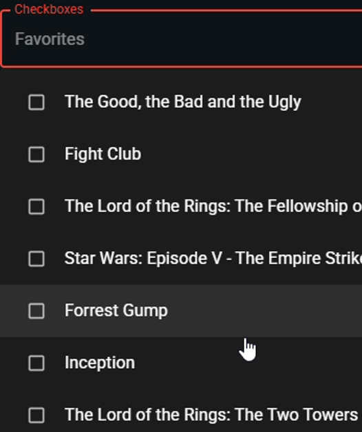
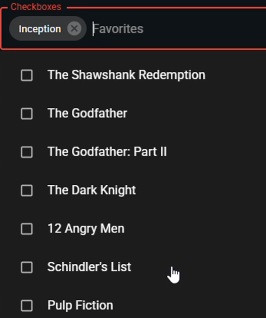

1.1s dropdown opened 3.4s list scrolled: Fight Club, Forrest Gump, Inception, ... 4.1s click "Inception" 4.3s chip "Inception" added 4.3s list replaced: The Shawshank Redemption, The Godfather, ...
# 3.4s: scroll down to Inception inception.scroll_into_view_if_needed() before = listbox.evaluate("el => el.scrollTop") # 4.1s: click it inception.click() after = listbox.evaluate("el => el.scrollTop") # expected: the list stays where it was if after < before - 20: return REPRODUCED
scrollTop 523 → 0scroll position kept